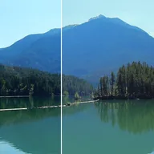

Hooglichten & schaduwen

Herstelt of versterkt heldere hooglichten en maakt donkere schaduwen lichter of dieper, op basis van de helderheid van elke pixel.
Instellingen
| Instelling | Type | Bereik | Standaard |
|---|---|---|---|
| Hooglichten | Getal | -1 tot 2 | 1 |
| Schaduwen | Getal | -1 tot 2 | 1 |
| Stijl | Keuze | Klassiek, Kleur behouden | Klassiek |